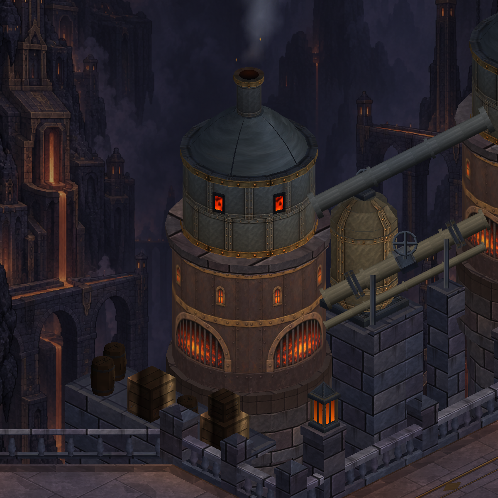
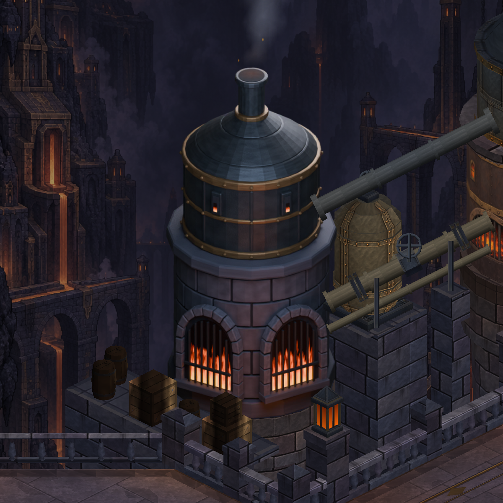
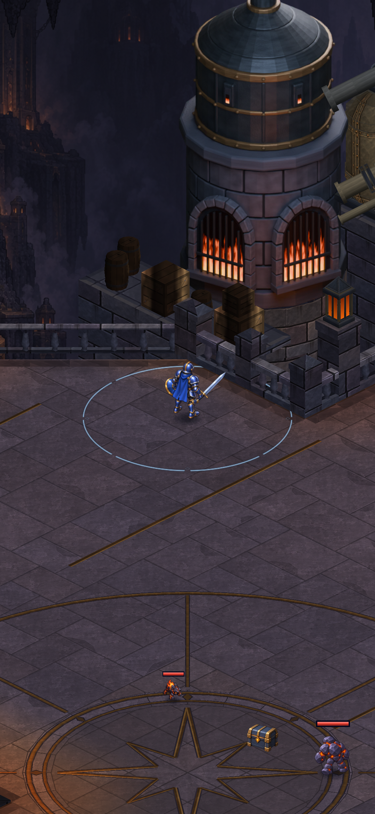
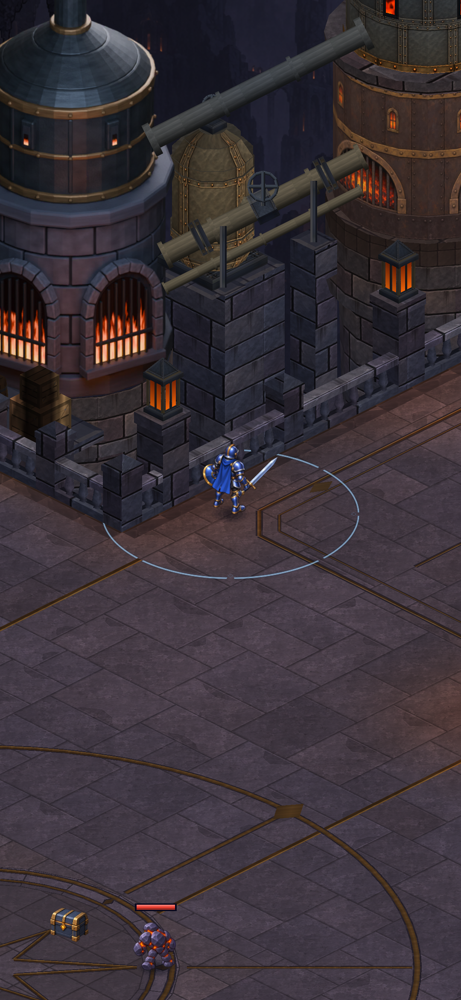
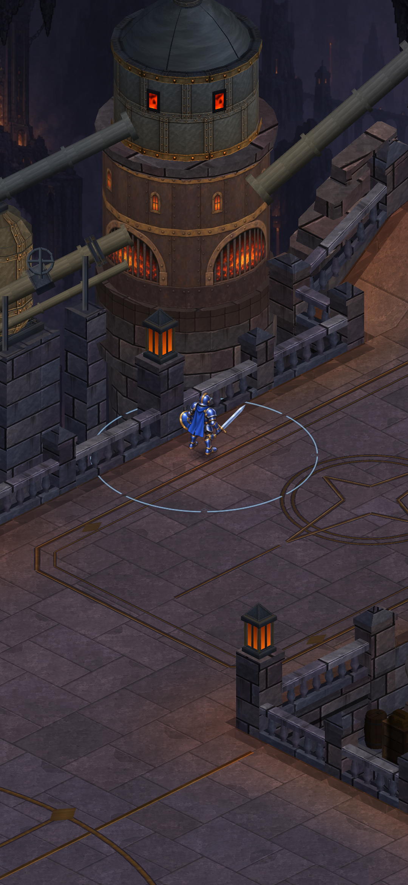
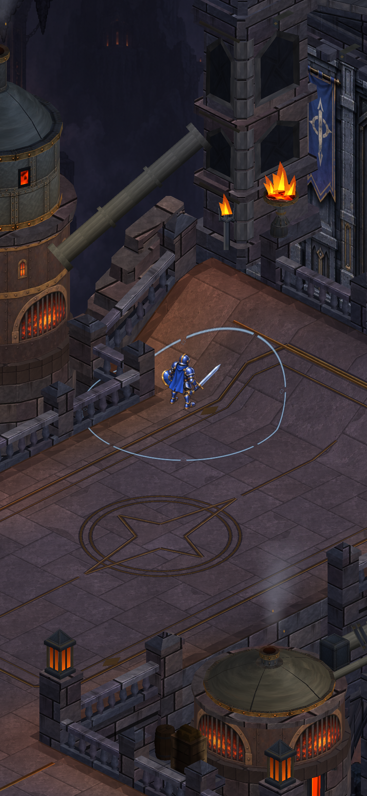
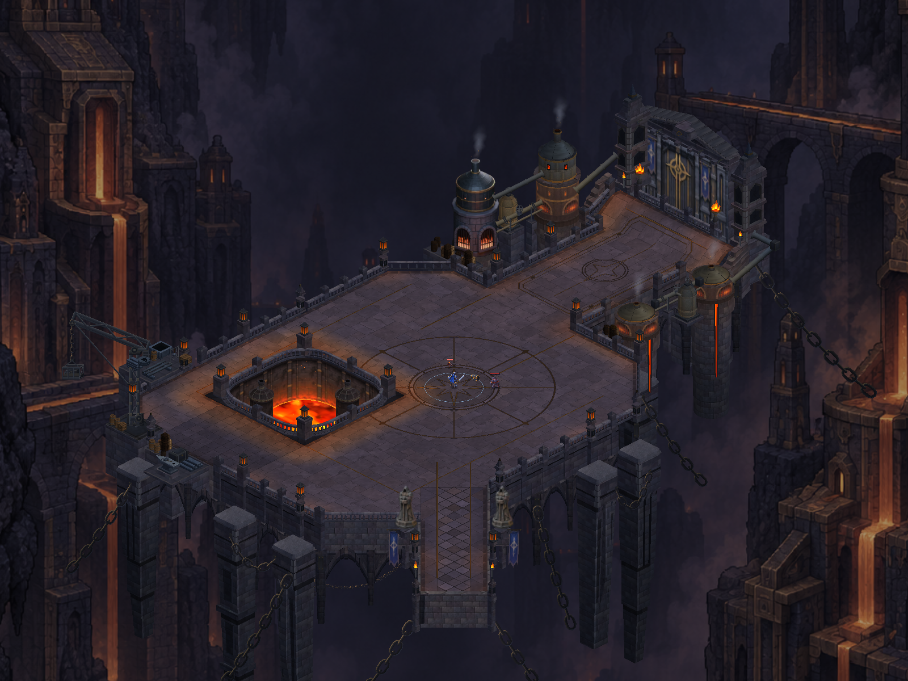

CRYPTFORGE · TEK FIRIN ENTEGRASYONU · 09 EKİM 2026
Yeni fırın artık kendi yerinde.
Kuzeydeki ilk fırın, Blender’da hazırlanan kemerli görünümü kullanıyor. Eski temel, boru uçları ve duman kaynağı korundu. Bu görüntü, üretim kodunun oluşturduğu haritadaki tek fırın değişikliğini gösteriyor.

Önce · mevcut yöntemle yeniden çizilen eski fırın
Sonra · yeni kemerli fırın, gerçek temel ve borularMobilde tam Blender modeli çizilmiyor. Görünüm, sıkıştırılmış bir dokuyla iki parçaya ayrılmış yüzey üzerinde gösteriliyor. Alt ve üst parçaların ayrı çizim sırası, korkuluk ve boruların önde/arkada kalmasını koruyor.
Gerçek haritada dört yaklaşım
Kahraman dört yürünebilir noktaya kontrollü olarak yerleştirildi. Kamera oyunun takip çerçevesini kullanıyor; ayrıntıları görmek için HUD gizli. Bunlar Unity görüntüleridir; telefon kanıtları ayrıca kaydedilir.

Batı avlusu
Geçişin başlangıcı
Geçişin ortası
Kapı tarafıHarita bütünü

Yeni doku: 1024 × 1024, ASTC 6×6, mipmap açık. Statik harita: 20 çizici ve 101.392 vertex. Önceki sürüm: 18 çizici ve 102.100 vertex. Bu sayılar tek başına FPS ölçümü değildir.
APK telefona yüklendi. Kurulu dosya doğrulandı ve 11 kayıt dosyası değişmedi. Oyunu açarak cihazda görsel/hareket kontrolü henüz yapılmadı. .NET 395, EditMode 415 ve PlayMode 150 test geçti.
Hedef referansın bütün görsel kalitesi henüz tamamlanmadı. Diğer fırınlar eski görünümü koruyor; bu tek değişiklik, yeni üretim yöntemini oyunda değerlendirmek için yapıldı.
Doğrulama ve cihaz kaydı · Düzenlenebilir model ve önceki deneme